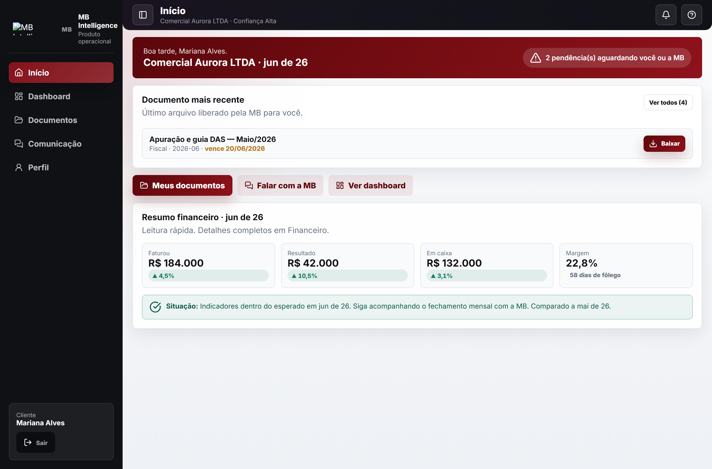
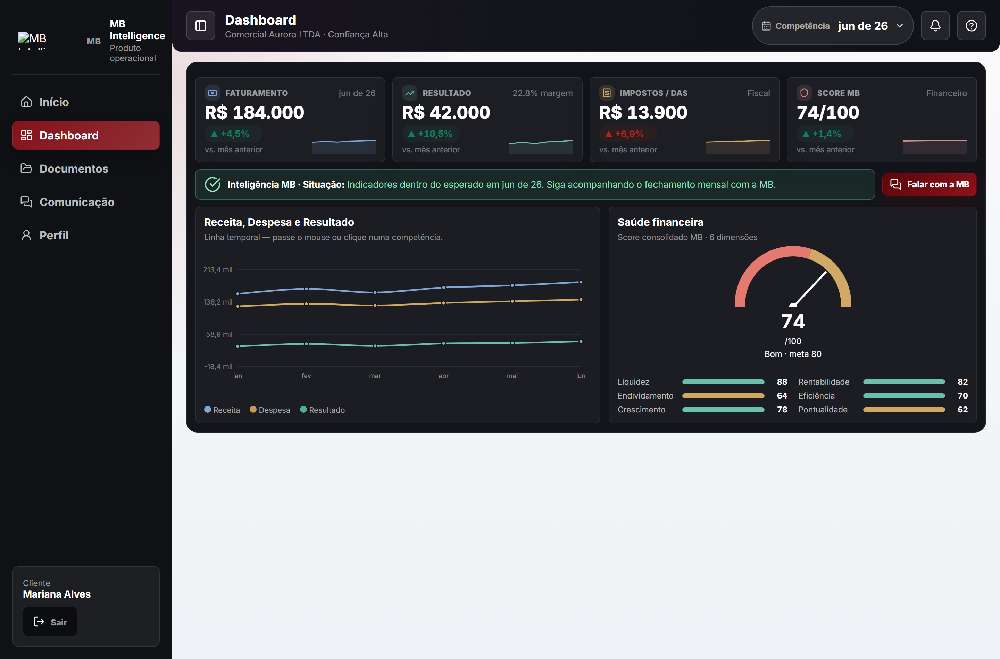
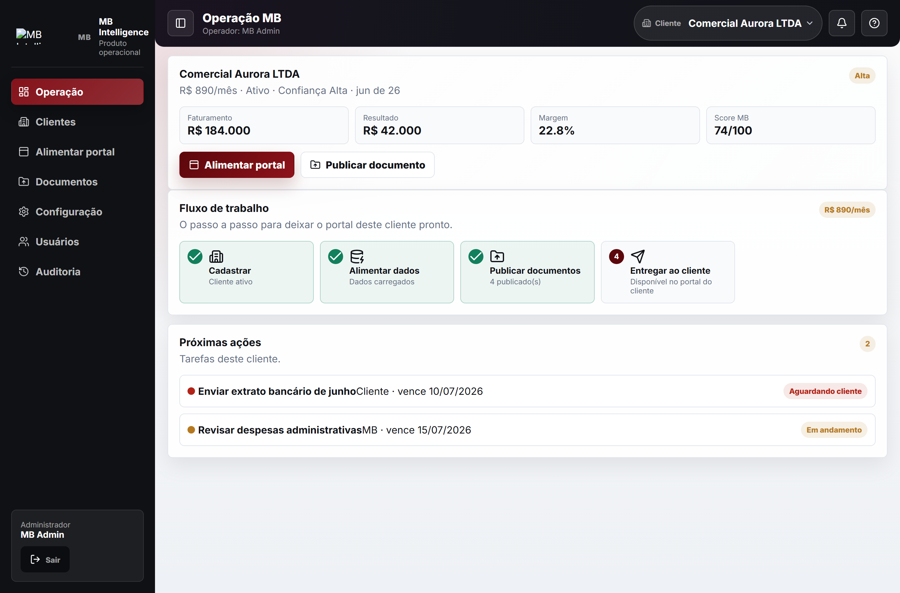

A MB Intelligence é a plataforma digital da MB Assessoria Empresarial. Ela reúne, num só portal, tudo o que a sua empresa precisa: os documentos e guias que a contabilidade emite, e a leitura financeira do seu negócio — quanto você faturou, quanto sobrou, quanto tem em caixa e como está a saúde da empresa, mês a mês.
Em vez de receber arquivos soltos por e-mail e WhatsApp, o cliente entra num portal organizado, com a informação traduzida para a linguagem do dono — não para a do contador.
Início objetivo com pendências do mês, último documento e resumo financeiro em 5 segundos.
KPIs, evolução de receita e despesa, fluxo de caixa e Score de saúde financeira.
Tudo o que a MB publica — DAS, folha, fiscal, contábil — pronto para baixar, por competência.
Neste documento: o que o sistema faz, para quem é, o que nos diferencia, a tecnologia por trás, a identidade visual da marca e como contratar.
Simples Nacional e Lucro Presumido — comércio, serviços, saúde e profissionais liberais.
Quem cansou de “só a guia” e quer enxergar a saúde financeira sem virar contador.
A MB cuida de toda a migração, sem custo adicional e sem dor de cabeça.


A equipe MB opera cada cliente por um painel próprio: cadastra, alimenta os dados, publica os documentos e entrega tudo no portal. Nada se perde — e o cliente enxerga o resultado desse cuidado.

Dados da empresa validados e acesso ao portal liberado.
Faturamento, impostos e documentos lançados por competência.
Tudo disponível no portal do cliente, com tarefas e prazos à vista.
A inteligência nasce de dados confiáveis. Por isso o trabalho é dividido com clareza: a MB cuida da parte técnica e fiscal; o cliente contribui com o que só ele tem — o dia a dia do negócio.
Quanto melhor a qualidade da informação, mais profunda é a análise que a MB devolve para você.
| Critério | Contabilidade tradicional | MB Intelligence |
|---|---|---|
| Entrega | ✕ Guia e balanço, por e-mail | ✓ Guia + inteligência financeira num portal |
| Acesso à informação | ✕ Espalhada em e-mail e WhatsApp | ✓ Tudo num só lugar, por competência |
| Leitura financeira | ✕ Linguagem técnica de contador | ✓ Linguagem do dono + Score 0–100 |
| Visão do negócio | ✕ Fecha uma vez por ano | ✓ Dashboard atualizado todo mês |
| Postura | ✕ Reativa — corre atrás do problema | ✓ Consultiva — antecipa e orienta |
| Relacionamento | ✕ Contato só quando há pendência | ✓ Consultor humano e acompanhamento mensal |
| Transparência | ✕ Cliente não vê o trabalho | ✓ Cliente acompanha tarefas e prazos |
| Tecnologia | ✕ Sistema interno fechado | ✓ Plataforma web, segura e na nuvem |
Outros escritórios entregam a obrigação. A MB entrega a obrigação e a inteligência para o dono crescer com segurança.
A MB Intelligence é uma aplicação web na nuvem, sem instalação. Funciona no computador e no celular, com os mesmos padrões de segurança usados por bancos digitais.
Aplicação web (SPA) em JavaScript, empacotada com Vite. Interface responsiva, com um sistema de design próprio (tokens de cor, tipografia e espaçamento).
Backend em funções serverless (Node.js), publicado na Vercel com entrega global por CDN e deploy contínuo.
Banco de dados PostgreSQL gerenciado no Supabase, com isolamento por cliente (multi-tenant) e Row-Level Security.
Documentos guardados em Storage dedicado, acessíveis apenas por links temporários e autenticados.
Criptografia em trânsito (HTTPS/TLS), autenticação com tokens temporários e expiração de sessão por inatividade.
Controle de acesso por perfil e auditoria das operações críticas.
Tratamento de dados conforme a LGPD (Lei 13.709/2018): finalidade definida, direito de acesso, correção e exclusão.
Dados compartilhados apenas com órgãos reguladores, quando exigido por lei.
Monograma MB (M em vermelho, B em branco) + assinatura “MB Assessoria Empresarial”. Aplicar preferencialmente sobre fundos escuros ou vermelho-marca. Preservar área de respiro e nunca distorcer.
Família única para títulos, interface e textos. Geométrica, legível e moderna.
Direto, próximo e sem jargão. Falamos com o dono, não com o contador. Traduzimos número em decisão. Tom sóbrio e profissional — fosco, sem brilho, transmitindo confiança e cuidado.
Cadastre sua empresa e, em até 48 horas, a MB ativa seu portal e orienta os próximos passos. Sem fidelidade mínima. Se você já tem contador, cuidamos da migração — sem custo adicional.
Tire suas dúvidas e veja uma demonstração do portal com os dados da sua empresa.